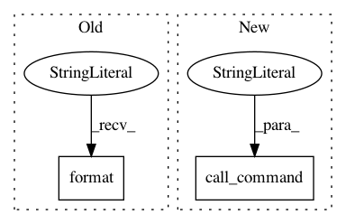

9994a22f16fe4db18d29eb1e998b678804676ef2,server/website/website/management/commands/resetwebsite.py,Command,handle,#Command#,41
Before Change
sites website > {}".format(dumpfile))
self.reset_website()
if options["loadfile"]:
local("python manage.py loaddata "{}"".format(options["loadfile"]))
self.stdout.write(self.style.SUCCESS(
"Successfully reset website."))
After Change
def handle(self, *args, **options):
dumpfile = options["dumpfile"]
self.stdout.write("Dumping database to file "{}"...".format(dumpfile))
call_command("dumpdata", "admin", "auth", "django_db_logger", "djcelery", "sessions",
"sites", "website", output=dumpfile)
call_command("stopcelery")
self.reset_website()
In pattern: SUPERPATTERN
Frequency: 3
Non-data size: 2
Instances
Project Name: cmu-db/ottertune
Commit Name: 9994a22f16fe4db18d29eb1e998b678804676ef2
Time: 2019-11-26
Author: dvanaken@cs.cmu.edu
File Name: server/website/website/management/commands/resetwebsite.py
Class Name: Command
Method Name: handle
Project Name: cmu-db/ottertune
Commit Name: 6bf50b892d795bf88991020f554c1754e403f4df
Time: 2020-01-14
Author: dvanaken@cs.cmu.edu
File Name: server/website/website/management/commands/resetwebsite.py
Class Name: Command
Method Name: handle
Project Name: cmu-db/ottertune
Commit Name: 9994a22f16fe4db18d29eb1e998b678804676ef2
Time: 2019-11-26
Author: dvanaken@cs.cmu.edu
File Name: server/website/website/management/commands/resetwebsite.py
Class Name: Command
Method Name: reset_website